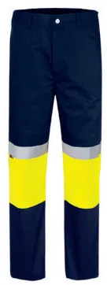

Jonsson · Vestuário de protecção
Calças de Alta Visibilidade em 2 Tons
Código: CP33P
Tecido Contraste - Versatex 65/35 Polícarbonato Sarja / Tecido Florescente - 50/50 Poliéster de Algodão
- Receba a cotação por WhatsApp ou e-mail
- Junte vários produtos na mesma lista
Características
- Tecido Contraste - Versatex 65/35 Polícarbonato Sarja / Tecido Florescente - 50/50 Poliéster de Algodão
- 230g/m²
- Cor: Amarelo Alta Visibilidade e Azul Marinho, Laranja Alta Visibilidade e Azul Marinho
- Fitas reflectoras Lima & Verde Garrafa- 50mm JW 2907 fitas reflectoras de prata para maior visibilidade
- Pontos travete de reforço na costura da calça no gancho de frente, na junção dos ganchos dianteiros e traseiros, nos cantos dos bolsos da trás, nos cantos dos bolsos frontais
- Costura dupla reforçada em ponto corrente no gancho traseiro, nas duas laterais, nas entrepernas
- Tecido Florescente para uma maior visibilidade
- Dois bolsos
- Fecho frontal com Zíper YKK oculto
Normas e tamanhos
28 - 50